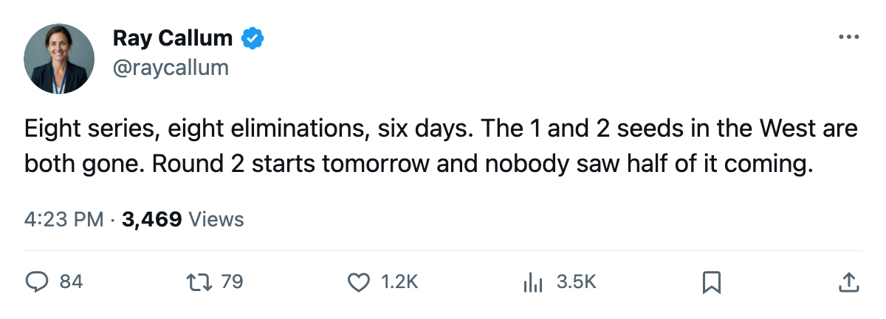

The Night Shift: every first-round series concluded, and four second-round matchups are set
Eight eliminations in six days. Round 2 starts tomorrow.
 Ray CallumSenior correspondent · Home Ice Network
Ray CallumSenior correspondent · Home Ice NetworkBetween April 15 and April 20, every first-round series ended. The second round opens Friday.
East
 Washington Capitals swept
Washington Capitals swept  Carolina Hurricanes in four. The closeout, 2-1 in Raleigh on April 15, gave
Carolina Hurricanes in four. The closeout, 2-1 in Raleigh on April 15, gave  Olaf Kolzig87 a 4-0 record with a 1.00 GAA for the series.
Olaf Kolzig87 a 4-0 record with a 1.00 GAA for the series.  Jaromir Jagr84 (0+9=9 in 4) never scored but set everything else.
Jaromir Jagr84 (0+9=9 in 4) never scored but set everything else.
 Dallas Stars swept
Dallas Stars swept  Detroit Red Wings in four. The final game, 3-1 in Detroit on April 15, capped
Detroit Red Wings in four. The final game, 3-1 in Detroit on April 15, capped  Marty Turco94 at 4-0 and 1.17 GAA. Detroit managed 5 goals across the sweep.
Marty Turco94 at 4-0 and 1.17 GAA. Detroit managed 5 goals across the sweep.  Steve Yzerman79, who finished the series with 2 assists, went on the injured list with a groin injury sometime between April 15 and April 21 and is not back until June 26.
Steve Yzerman79, who finished the series with 2 assists, went on the injured list with a groin injury sometime between April 15 and April 21 and is not back until June 26.
 Pittsburgh Penguins beat
Pittsburgh Penguins beat  New Jersey Devils 4-2. The seventh seed won Game 6, 3-2 in overtime, on the road. Five of the six games were decided by one goal. Backup Sebastien Caron79 took the Game 6 decision (1-0, 1.00 GAA, .952) after
New Jersey Devils 4-2. The seventh seed won Game 6, 3-2 in overtime, on the road. Five of the six games were decided by one goal. Backup Sebastien Caron79 took the Game 6 decision (1-0, 1.00 GAA, .952) after  Johan Hedberg87 went 3-2 (.907) through five starts.
Johan Hedberg87 went 3-2 (.907) through five starts.
 Tampa Bay Lightning beat
Tampa Bay Lightning beat  Boston Bruins 4-2. Tampa Bay closed it out 4-2 in Boston on April 18.
Boston Bruins 4-2. Tampa Bay closed it out 4-2 in Boston on April 18.  Nikolai Khabibulin92 finished 4-2, 1.99 GAA, one shutout.
Nikolai Khabibulin92 finished 4-2, 1.99 GAA, one shutout.
 Toronto Maple Leafs beat
Toronto Maple Leafs beat  New York Islanders 4-1. The 2-1 closeout in Toronto on April 16 gave
New York Islanders 4-1. The 2-1 closeout in Toronto on April 16 gave  Roberto Luongo94 a series line of 4-1, 1.41 GAA, .963.
Roberto Luongo94 a series line of 4-1, 1.41 GAA, .963.
West
 Mighty Ducks of Anaheim beat
Mighty Ducks of Anaheim beat  Nashville Predators 4-2. The Ducks scored 4 in a Game 6 win at home on April 18.
Nashville Predators 4-2. The Ducks scored 4 in a Game 6 win at home on April 18.  Sergei Fedorov90 (4+2=6 in 6) led the way.
Sergei Fedorov90 (4+2=6 in 6) led the way.
 Edmonton Oilers beat
Edmonton Oilers beat  Vancouver Canucks 4-2. Edmonton won Game 6 in Vancouver, 3-1, on April 19.
Vancouver Canucks 4-2. Edmonton won Game 6 in Vancouver, 3-1, on April 19.  Mike York79 finished with 11 points in 6.
Mike York79 finished with 11 points in 6.
 Phoenix Coyotes beat
Phoenix Coyotes beat  Colorado Avalanche 4-3. The eighth seed won Game 7 in Denver, 4-3, on April 20.
Colorado Avalanche 4-3. The eighth seed won Game 7 in Denver, 4-3, on April 20.  Sean Burke88 finished 4-2, 2.44 GAA, .909.
Sean Burke88 finished 4-2, 2.44 GAA, .909.
Round 2
| # | Matchup | Starts | At |
|---|---|---|---|
| 1 v 7 | TOR vs PIT | Apr 22 | TOR |
| 2 v 8 | DAL vs PHX | Apr 22 | DAL |
| 3 v 4 | TB vs WSH | Apr 23 | TB |
| 5 v 6 | EDM vs ANA | Apr 23 | EDM |
